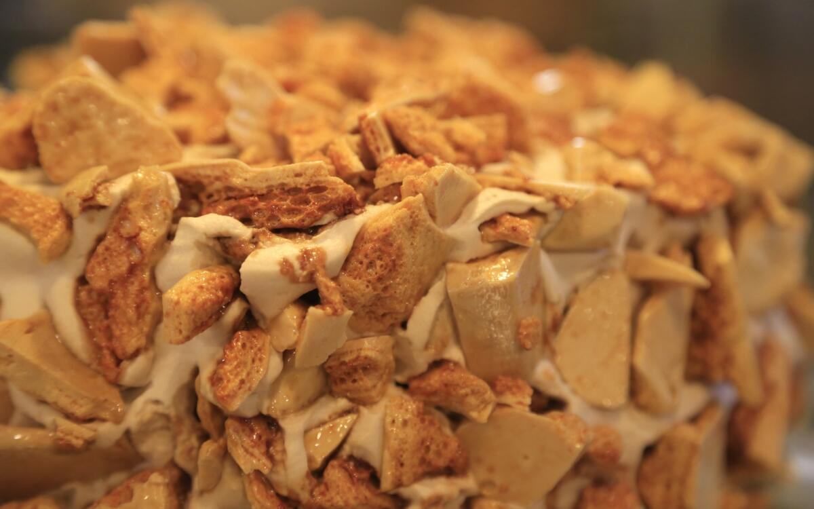

learn about chemical leavening by making coffe crunch cake!
Leavening agents are substances that cause doughs and batters to expand by releasing gases within the mixture. The resulting bubbles make baked goods lighter and softer in texture.
There are three major categories:
Baking soda is chemically known as sodium bicarbonate (NaHCO₃). It is a base that reacts with acids to produce carbon dioxide (CO₂), water, and a salt. This gas gets trapped in the batter and expands when heated, causing the product to rise.
When an acid such as vinegar (acetic acid), lemon juice (citric acid), or buttermilk (lactic acid) is added, the following reaction occurs:
NaHCO₃ + H⁺ → Na⁺ + CO₂↑ + H₂O
This is an instantaneous reaction — as soon as the acid and base are mixed, carbon dioxide begins to form.
Even without an acidic ingredient, baking soda can release carbon dioxide when heated. This process is called thermal decomposition and occurs around 80°C (176°F) or higher:
2 NaHCO₃ → Na₂CO₃ + CO₂↑ + H₂O
In this reaction, sodium bicarbonate breaks down into sodium carbonate (a more bitter-tasting residue), carbon dioxide, and water vapor. However, this decomposition is slower and less efficient than the acid-base reaction, and it may leave an unpleasant taste if not balanced properly.
Baking powder contains both an acid (usually cream of tartar or monocalcium phosphate) and a base (baking soda), along with a drying agent (typically cornstarch). It comes in two types:

You can see the effect of baking soda in the hundreds of bubbles throughout the coffee crunch due to the release of carbon dioxide.